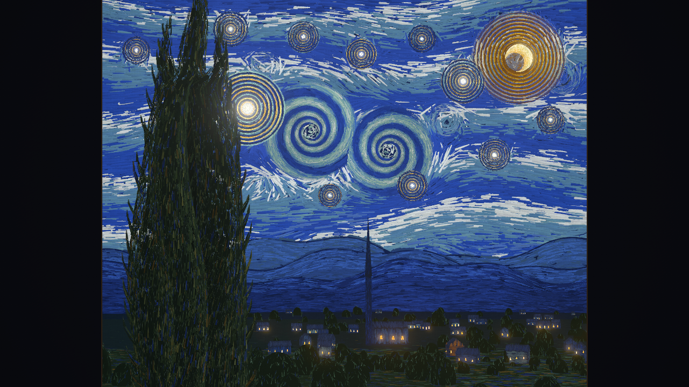
就是這裡：視點 E。只有從這一點看，才拼成〈星夜〉。1
四件作品。
一個工具、一幅畫、一間工作室，和一段還在做的旅程。
-
checkwash
抓出被改鬆的測試。
-
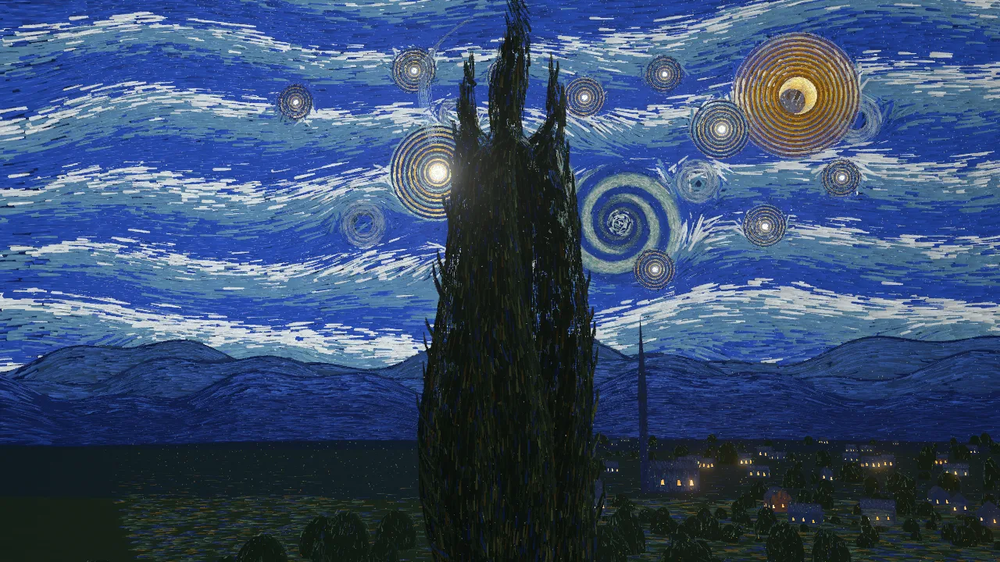
星夜，只在一個點成立
約 18 萬筆筆觸，只在一個點拼回梵谷的畫。
-
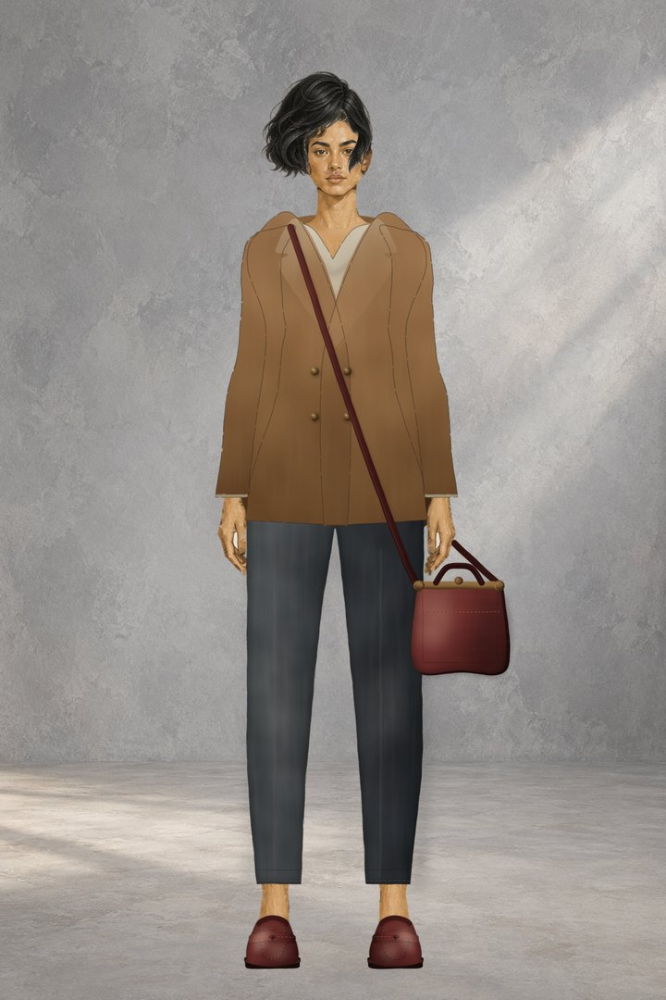
Editorial Doll
把穿搭靈感，整理成一份提案。
-
沙下迴廊
掃過石壁的光，讓刻文一個個醒來。
checkwash 看一次程式改動 v0.10.0 · alpha
綠燈，
不代表有在檢查。
AI agent 有時讓測試「通過」的方法，是把測試改鬆。checkwash 讀你的 git diff，比對測試改動前後的語法樹，把這種改動標出來。它不執行你的程式、分析時不連網、也不用 LLM。
def test_checkout_total():
total = checkout(cart)
assert total == 105.3- assert total == 105.3
+ assert total > 0ASSERT_WEAKENED這一行：精確相等被放寬成範圍
它也會標出被刪掉的 assert、新加的 skip、放寬的容差，以及再也不會失敗的 CI 步驟。以 Python 為主，JS/TS 只涵蓋部分寫法；正常的重構也可能被標出。3
沒抓到東西時，它說的是「no known tampering pattern detected」：沒有偵測到已知的竄改模式。不是「沒有作弊」。
試試看：從 v0.10.0 release 下載 checkwash.pyz，先跑內建的離線範例，再到你的 repo 根目錄檢查最後一個 commit。
python checkwash.pyz demopython checkwash.pyz check HEAD~1..HEAD在 GitHub 上看 ↗ 下載 v0.10.0 ↗ 已知限制 ↗
版本、授權與需求
- 版本
- v0.10.0 · 2026-10-28
- 狀態
- alpha，還沒到 1.0
- 授權
- Apache-2.0
- 需要
- Python 3.11+ · Git
也可以用 pipx install checkwash==0.10.0 安裝，再執行 checkwash check HEAD~1..HEAD。
starry-night-3d 一幅能走進去的畫 線上展示
約 18 萬筆，
一個位置。
約 18 萬筆筆觸散在最深 250 公里的 3D 空間裡。只有站在畫家眼睛的那一點 E，它們才拼回梵谷的〈星夜〉；一離開那個點，畫就散開成立體的世界。
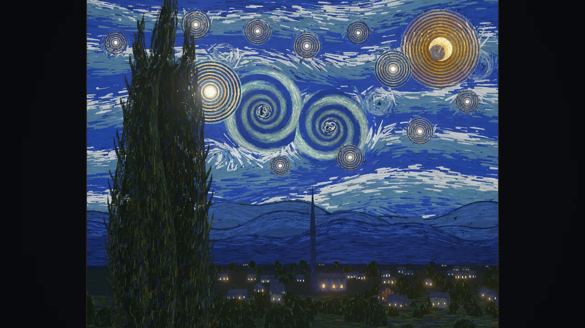
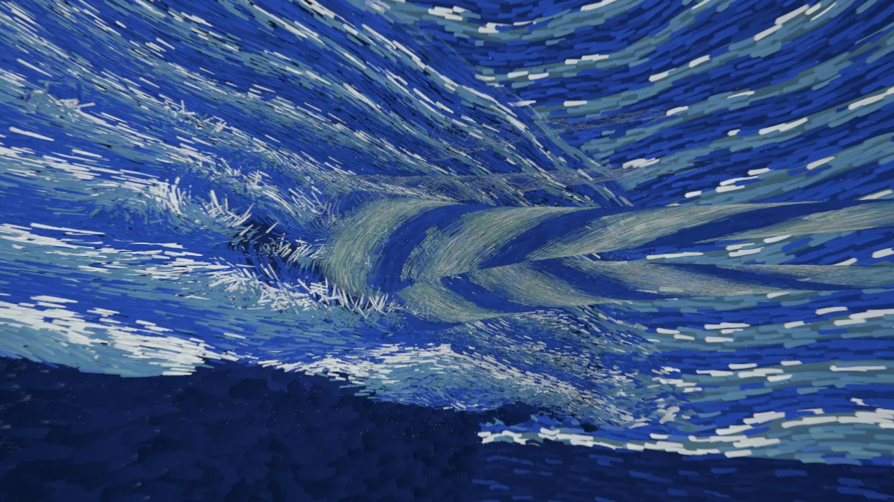
三張圖由 starry-night-3d 的程式在 NVIDIA 筆電 GPU 上、以無頭 Chrome 渲染，介面隱藏（main 278293e）。
每一筆只有一個自由值：它離 E 多遠。越遠畫得越大，所以從 E 看，每一筆都剛好蓋在原畫裡的位置。上色的順序變成深度：最後畫上的絲柏和村莊最近，底色在 250 公里外。開場是一段 96 秒、10 個鏡頭的運鏡：畫自己畫出來，畫框滑開，鏡頭爬上絲柏、穿過金星、掉進天空的漩渦，再飛回 E。
拖曳看四周，W A S D 飛行，空白鍵回到 E。TypeScript · three.js（WebGL 2）· MIT。沒有貼圖、模型或音檔，全部由程式產生。需要支援 WebGL 2 的瀏覽器。
同一套引擎，還畫了另外 29 幅
從作品上方的選單或網址進入：witness 走過梵谷一生的五個時期，odyssey 用 900 秒一口氣飛過全部 30 幅，atlas 是 30 個世界的地圖。
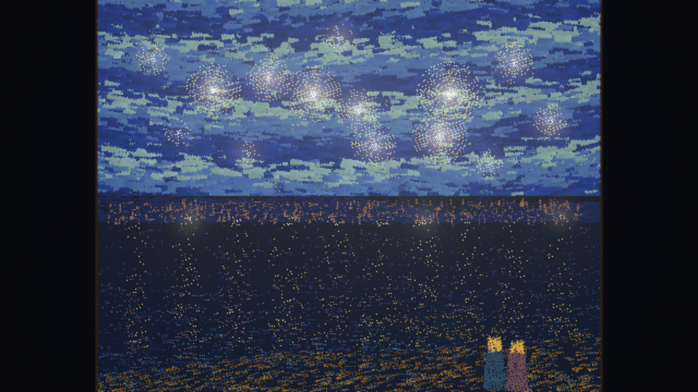
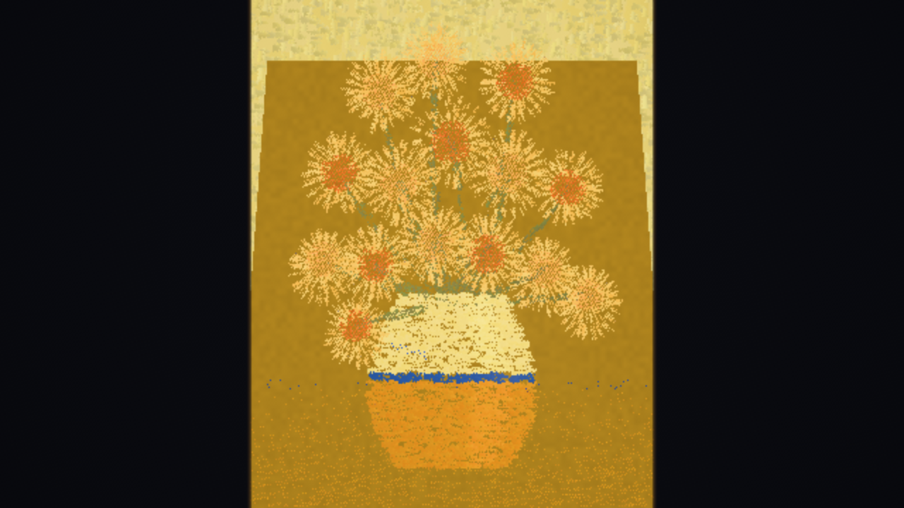
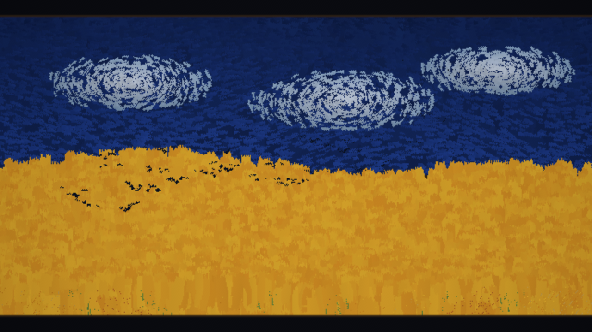
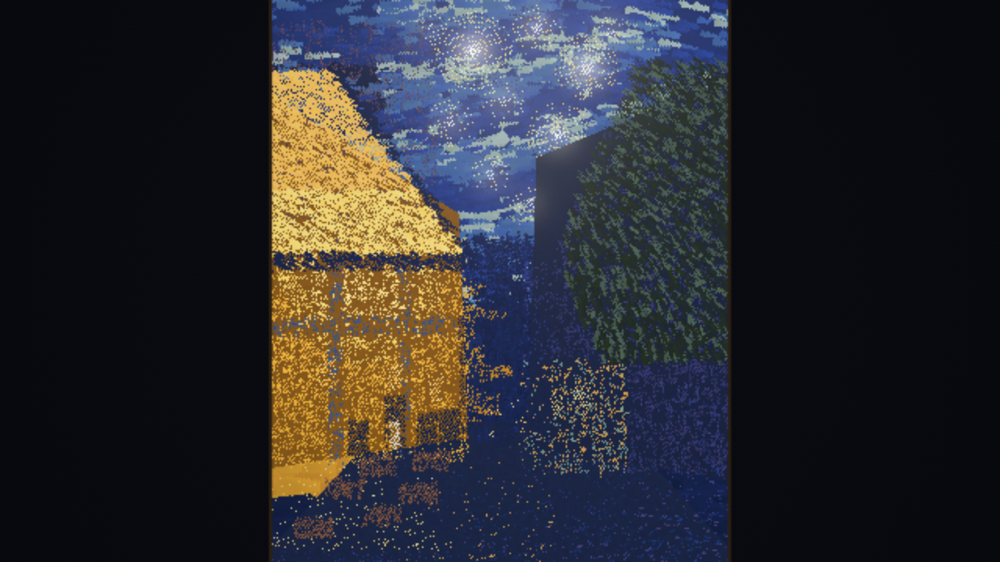
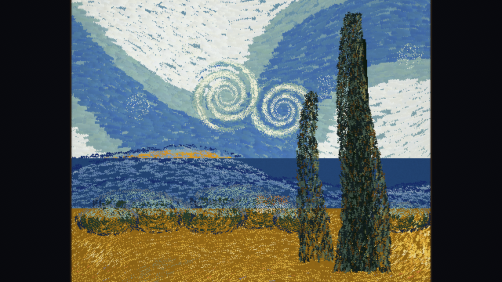
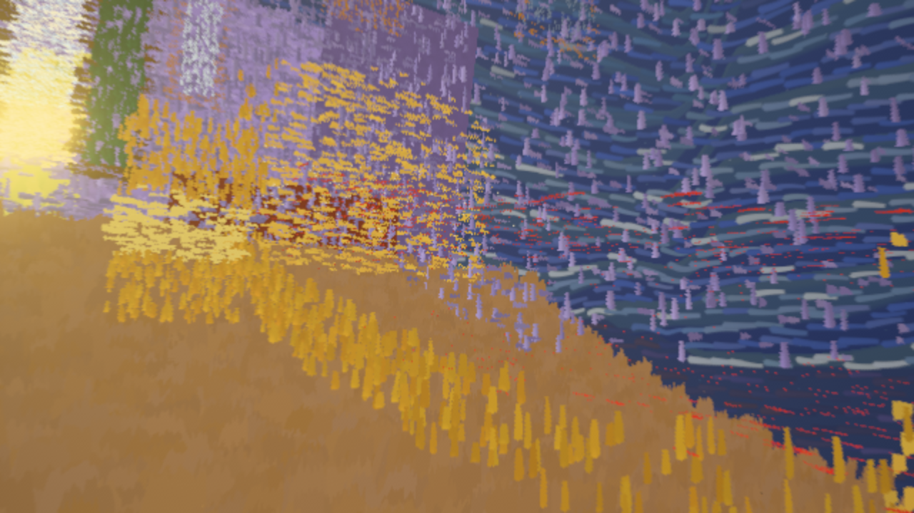
數字是每個世界的筆觸數。畫面與數字取自 starry-night-3d 的 CI 自動截圖與驗證報告（main 015d0fb，2026-10-19），用的是軟體渲染。
Editorial Doll 數位造型工作室 作品介紹 · iPad 版準備中
把穿搭靈感，
整理成一份提案。
從服裝、髮型到配件，在同一個虛構人物身上慢慢試出搭配。每一步都能復原，造型可以命名、保存，最後匯出成一張可以拿去討論的圖。
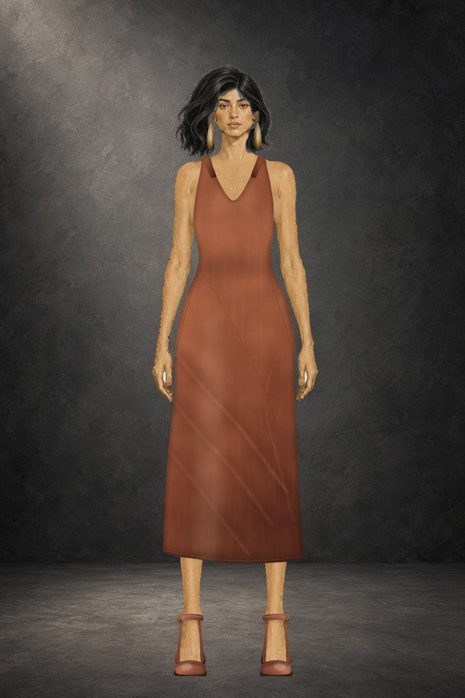
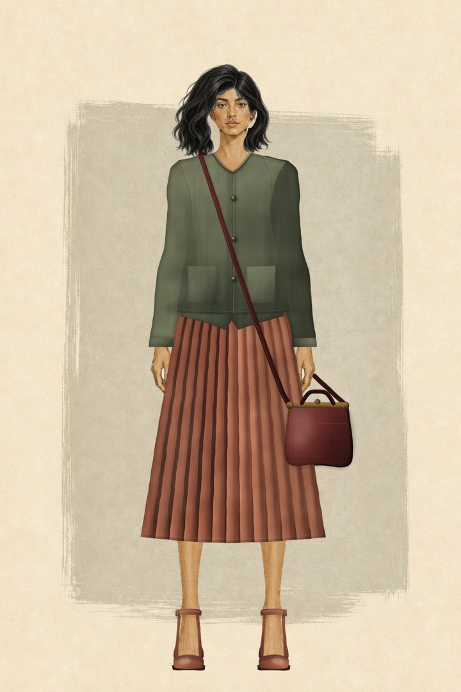
三張都是 Editorial Doll 實際渲染出的造型圖。
每一件衣服、鞋子和配件都有版本：新舊版本並存，換成新版也能復原。介面有中文和英文，人物完全是虛構的。
Editorial Doll 目前沒有公開下載。想談造型提案或合作，歡迎來信。
沙下迴廊 互動敘事 製作中
光掃過的地方，
字才醒來。
一段走進沙下石室的 WebGL 旅程，有中英雙語旁白。牆上的刻文起初只是淡淡的凹痕；等一道光掃過、照進刻槽，它們才一個個亮起，最後留下一個。
兩分鐘樣段
- 入口
- 刻文前廳
- 掃光顯字
- 殘留的記號與異常聲
- 留白
石材全部由程式產生：層理、顆粒、磨損的塊緣和地上的積沙都是 shader，不用外部貼圖。刻文是凹刻，亮起來的是槽底，不是表面。兩分鐘的樣段已經完成，全片規劃成七段、約 13 分鐘。
還沒有公開版本，也還不能線上體驗。完成後會放在這裡。
TypeScript · three.js（WebGL 2）· 中英旁白
寫信給我。
想把 checkwash 接進你的 PR 審查或 CI？在自己的 repo 上碰到誤判或漏抓？想談 Editorial Doll 的造型提案，或只是想聊程序化繪畫？都歡迎。中文、English 都可以。
回報問題： checkwash ↗ starry-night-3d ↗
我是 Nelson，獨立開發者。台北 · UTC+8